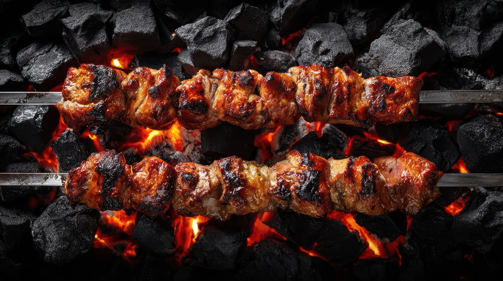

Gli arrosticini,
come si deve
- Fuoco vivo, carbone ben acceso. La fiamma no, la brace sì.
- Mettili fitti sulla canala, girali spesso: devono scottare, non asciugarsi.
- Sale solo alla fine. Se li hai congelati, vanno diretti sulla brace, senza scongelare.
- Si mangiano caldi, sfilandoli con i denti. Pane e un bicchiere di rosso.